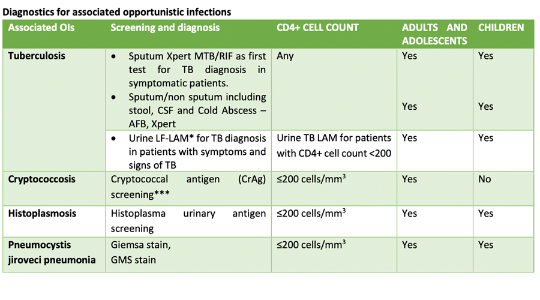
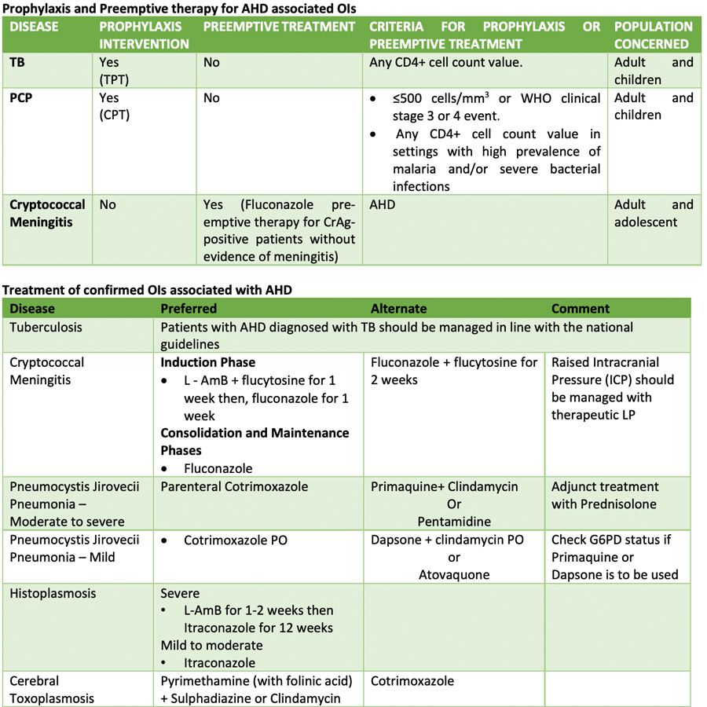
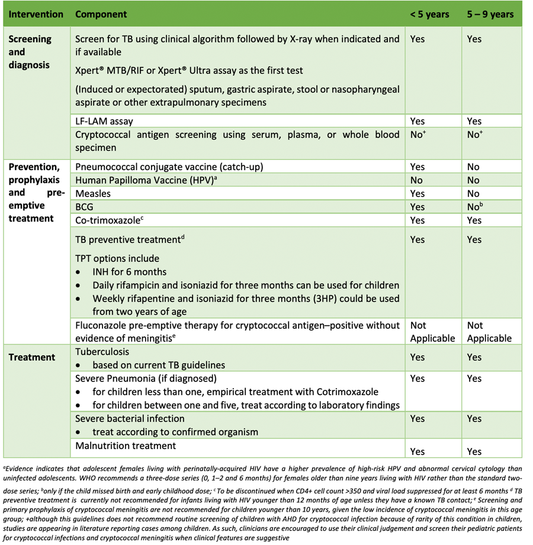

WHO defines AHD in adults, adolescents and children older than five years as CD4 cell count <200cells/mm3 or WHO stage 3 or 4 event. All children younger than five years old with HIV are considered as having advanced HIV disease.
Disease entities associated with AHD
The appearance of opportunistic infection is directly related to the extent of immune deficiency; the lower the CD4+ cell count, the higher the likelihood of appearance of opportunistic infections. The commonest opportunistic infections associated with AHD in Nigeria include tuberculosis, cryptococcal meningitis, oesophageal candidiasis, toxoplasmosis, pneumocystis jirovecii pneumonia, histoplasmosis and septicemia.
Components of AHD package of care
These include:
- Diagnostics for AHD and associated OIs
- Prophylaxis against associated OIs with AHD
- Preemptive treatment for OIs associated with AHD
- Treatment of confirmed OIs associated with AHD
- ART initiation in the setting of AHD
- Intensive adherence and monitoring
- Vaccination


People presenting for the first time or those returning to care should undergo history and clinical examination to evaluate for significant opportunistic infections (such as signs and symptoms of TB and signs and symptoms suggesting meningitis) before rapid ART initiation is offered. Although no longer a requirement for ART initiation, baseline CD4+ cell count testing should be performed to determine whether the patient has advanced HIV disease.
People who have no clinical signs and symptoms of TB or other opportunistic infections and whose cryptococcal antigen test is negative may initiate ART the same day in combination with their package of prophylaxis. For people with CD4+ cell count < 200 cells/mm3 in settings where cryptococcal antigen testing result is not available on the same day, consideration could be given to starting fluconazole prophylaxis and discontinuing if a cryptococcal antigen screening result is subsequently found to be negative
Vaccines not currently recommended for people with AHD
- BCG
- Rotavirus
- Yellow Fever
This is because the safety and immunogenicity of these vaccines in individuals with CD4+ cell count less than 200 cell/mm3 is not certain.
All children less than 5 years are considered to have AHD. This is based on the rationale that most children younger than five years usually present for care with advanced immunosuppression, younger children have an increased risk of disease progression and mortality regardless of clinical and immune condition. For children between 5 and 9 years of age, a positive HIV test should be followed with a CD4+ test and clinical evaluation. If diagnosed with AHD, the child should receive the applicable package of care that involves screening, prevention and treatment of OIs and comorbid conditions, and optimized care.
